library(ggplot2)
theme_set(theme_minimal())
Palettes
Proposal
spectralscale::palette_overview()
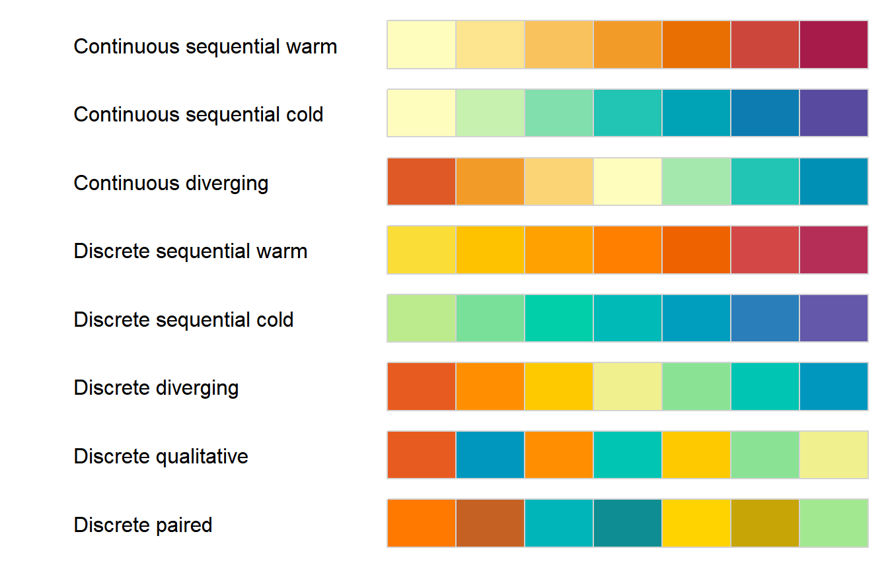
CVD & desaturation
spectralscale::palette_overview(colorspace::deutan)
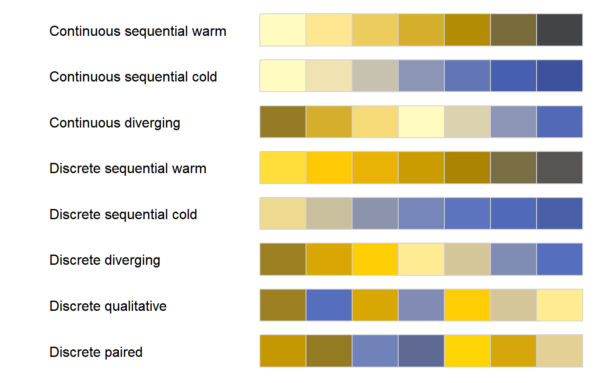
spectralscale::palette_overview(colorspace::tritan)
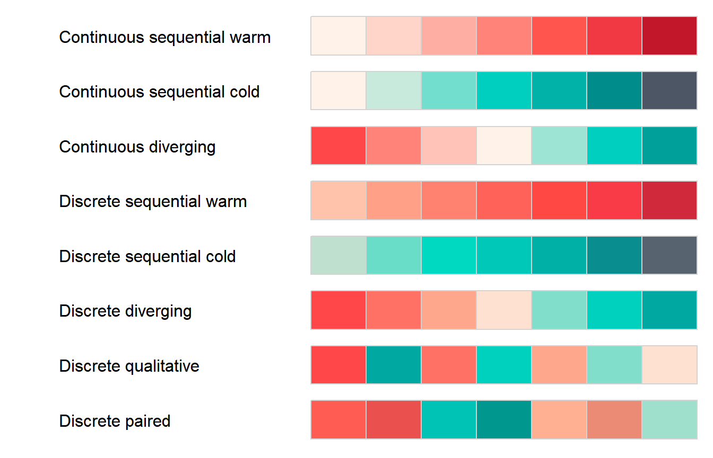
spectralscale::palette_overview(colorspace::protan)
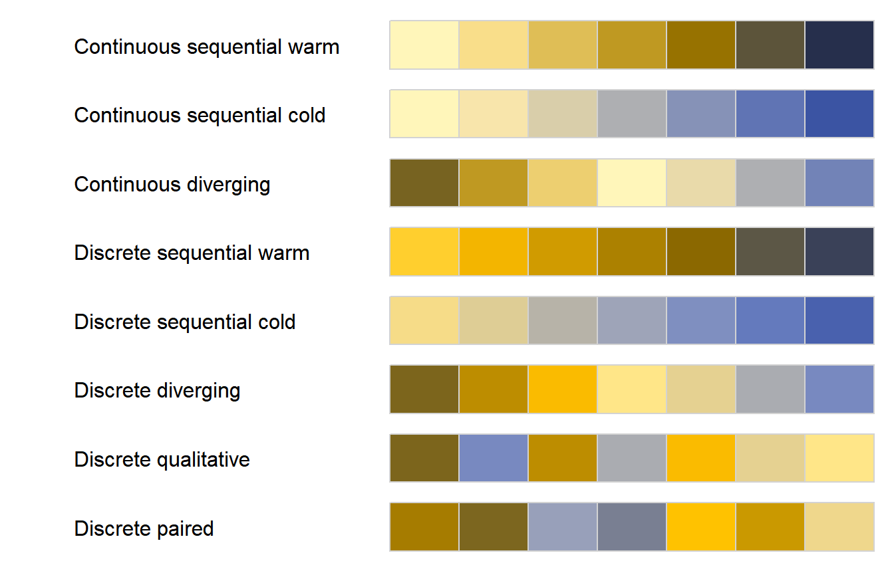
spectralscale::palette_overview(colorspace::desaturate)
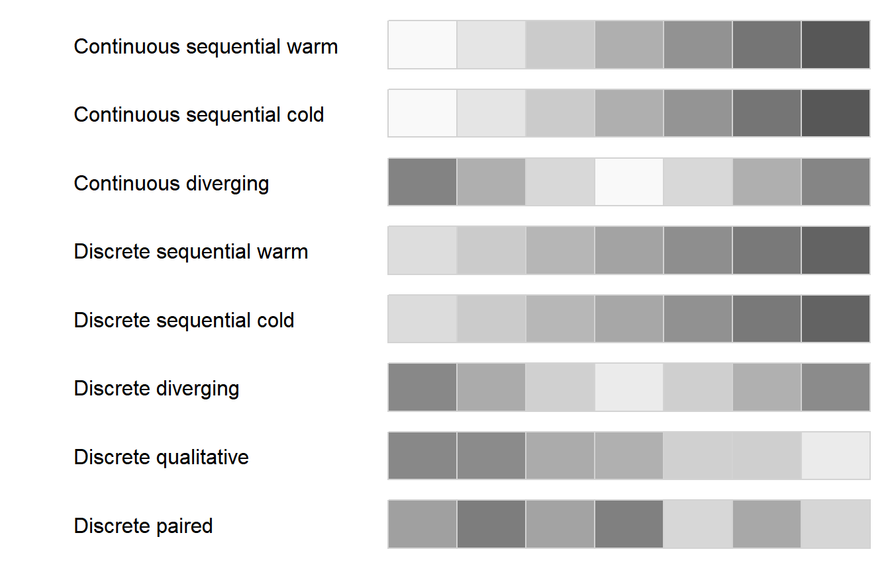
Demos
Continuous
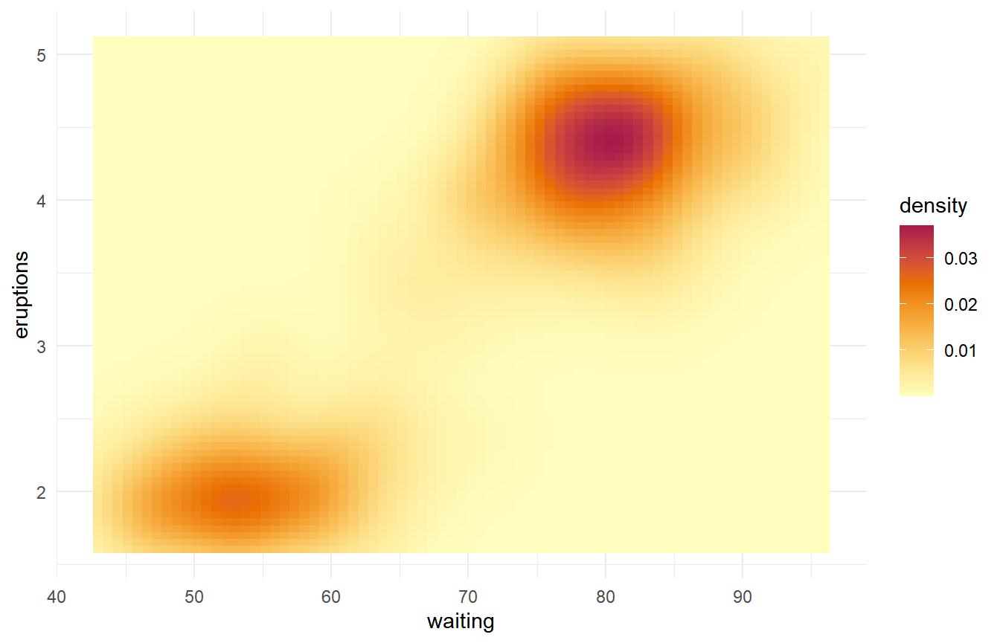
v + spectralscale::fill_c("cold")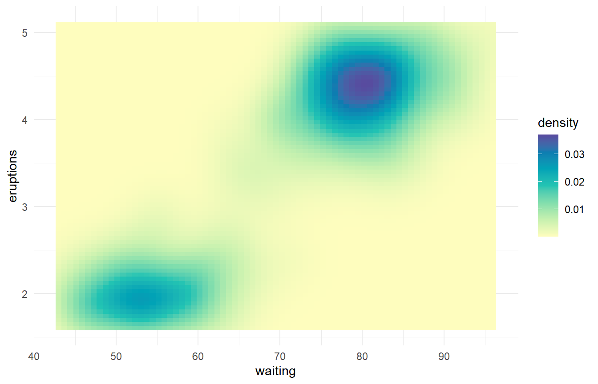
v + spectralscale::fill_c("div", mid = 0.02)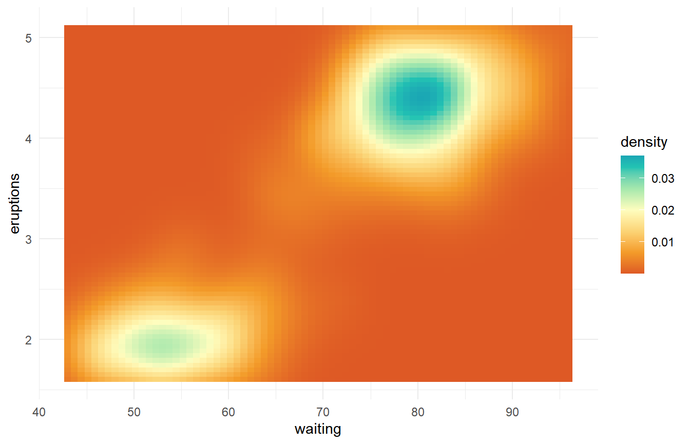
Binned
v + spectralscale::fill_b("warm") # default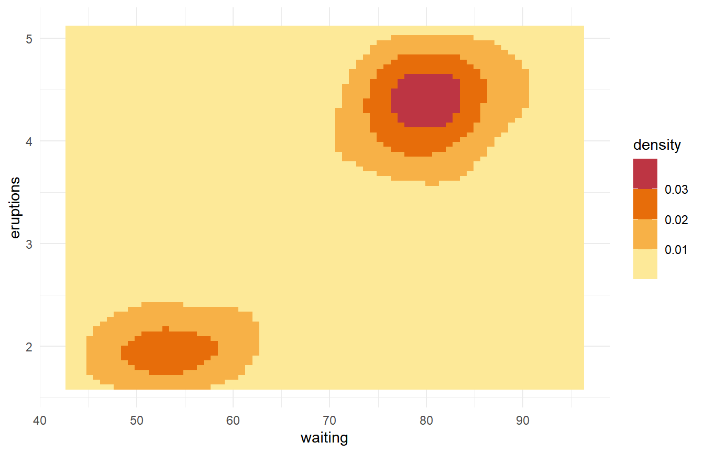
v + spectralscale::fill_b("cold")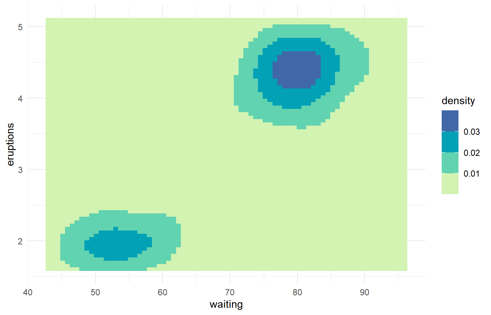
v + spectralscale::fill_b("div", mid = 0.0175, n.breaks = 8)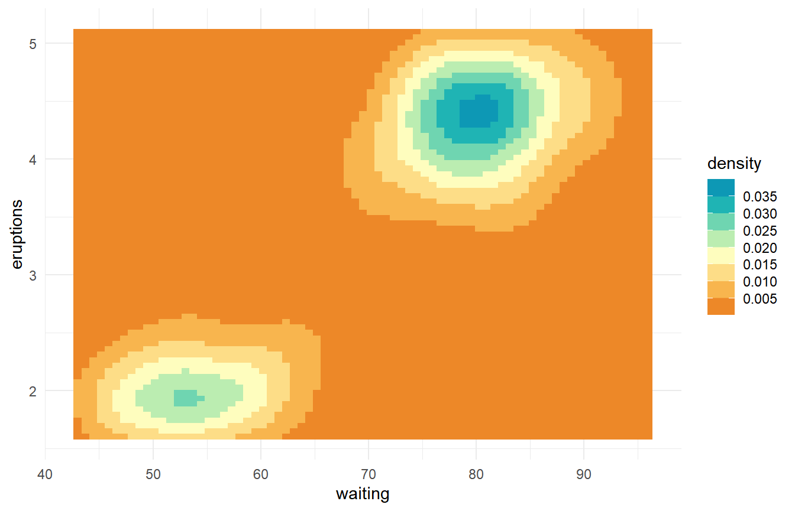
Discrete
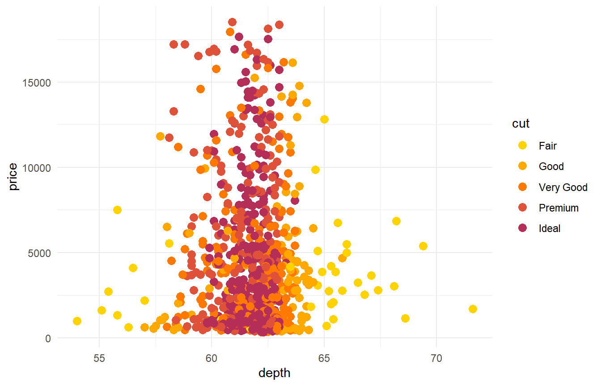
d + spectralscale::colour_d("cold")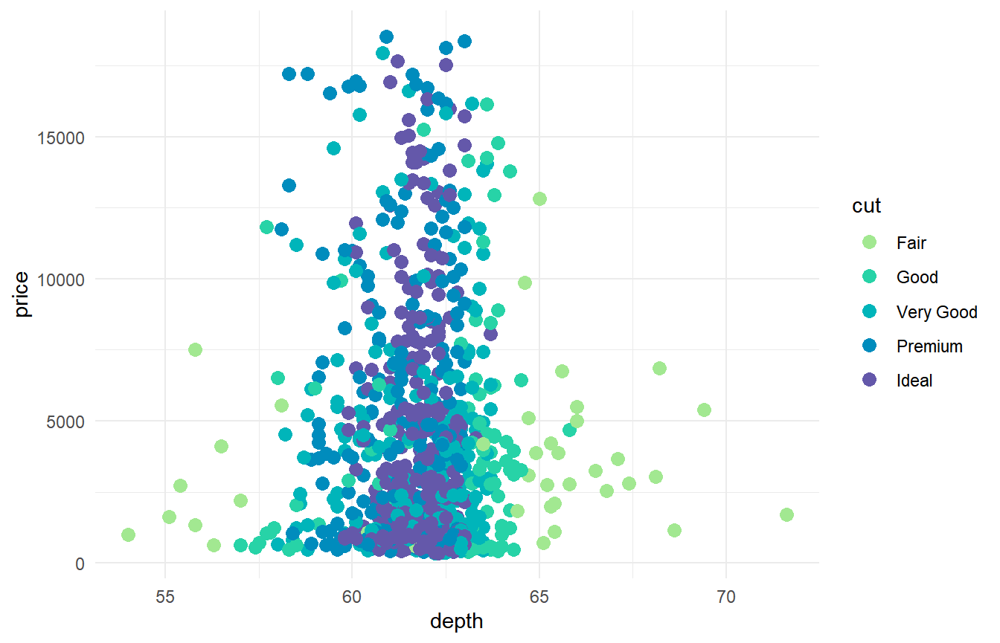
d + spectralscale::colour_d("div") # default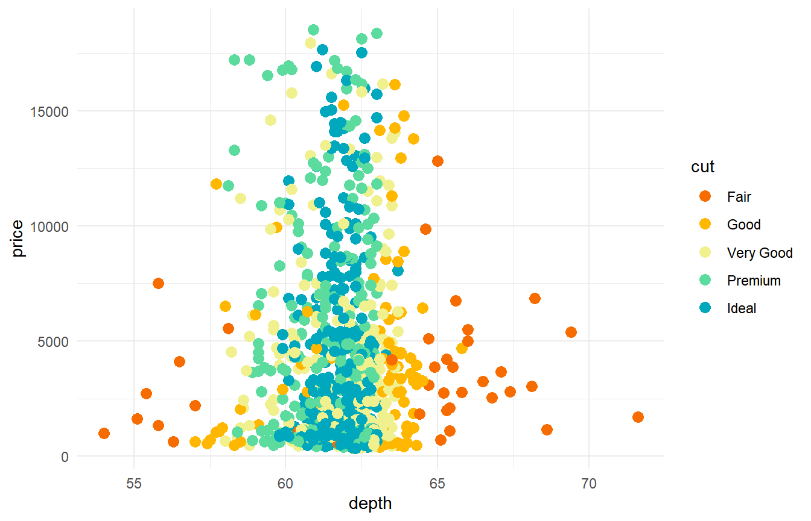
d + spectralscale::colour_d("qual")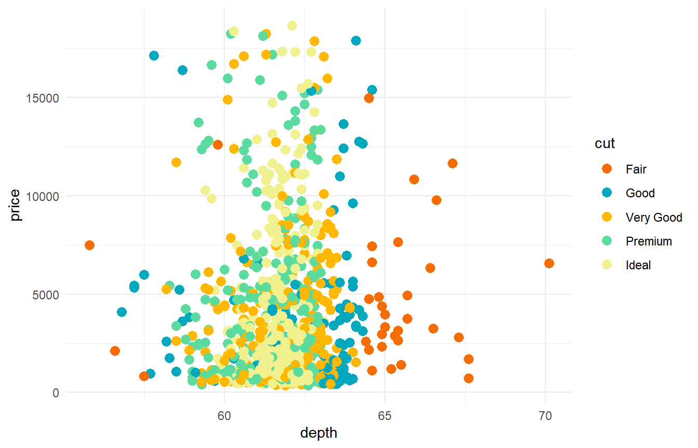
d + spectralscale::colour_d("pair")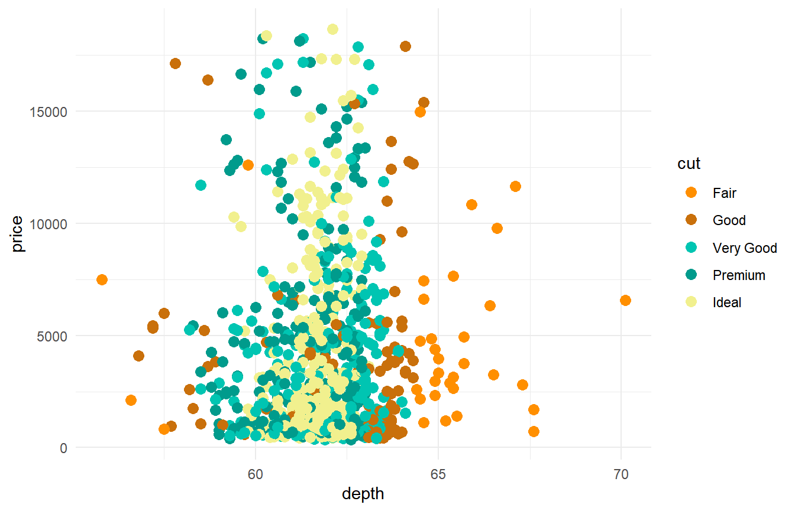